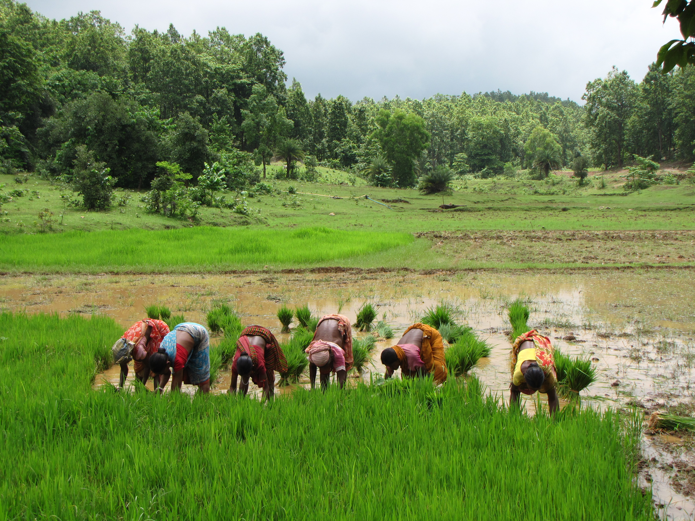
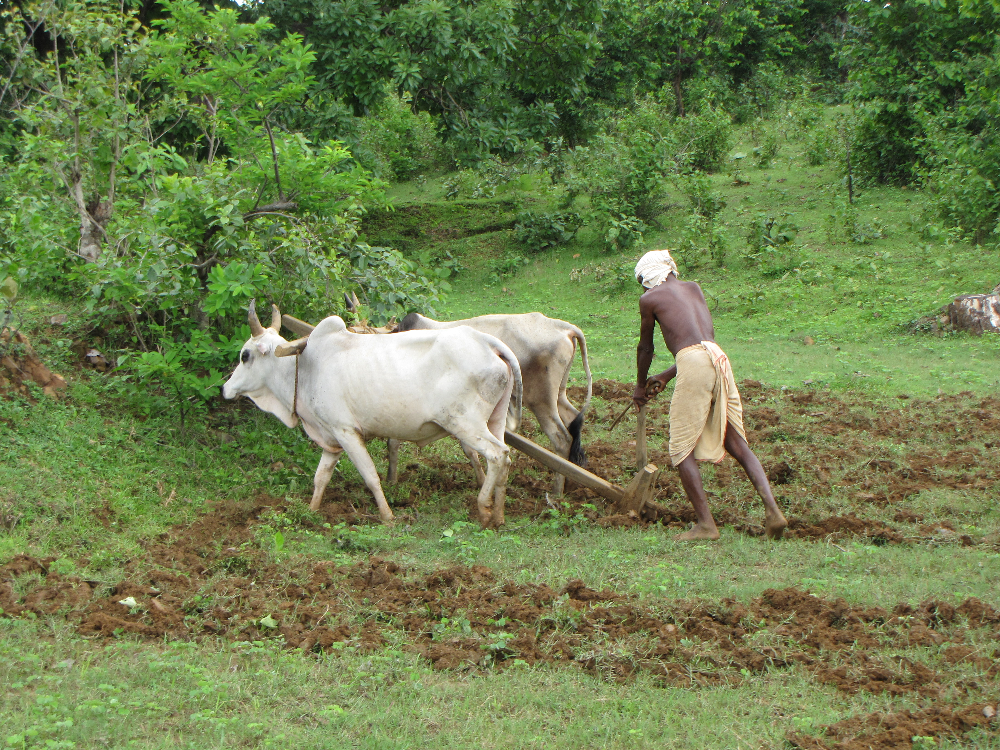

Sanjeevan
Integrated Agroforestry and Regenerative Agriculture
Sanjeevan is a collaborative initiative focused on transforming local ecosystems through Integrated Agroforestry and Regenerative Agriculture. Rooted in a systems-based approach, it combines the ecological benefits of agroforestry with the soil-restoring and climate-smart practices of regenerative agriculture. The aim is to build local climate-resilient, biodiverse, and productive landscapes that generate sustainable livelihoods, improve local nutrition, and strengthen market systems that drive lasting change.
Implementation Model

Homestead Agroforestry
Utilizing natural resources to support nutrition and income at the household level.

Farm-Based Agroforestry
Tree cultivation with intercrops to boost ecological and economic outcomes.

Regenerative Paddy
Promoting water-saving methods and seasonal diversification.